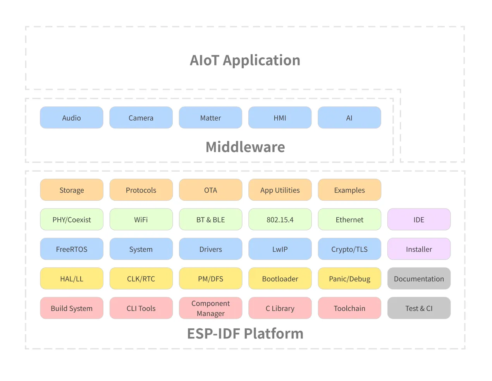
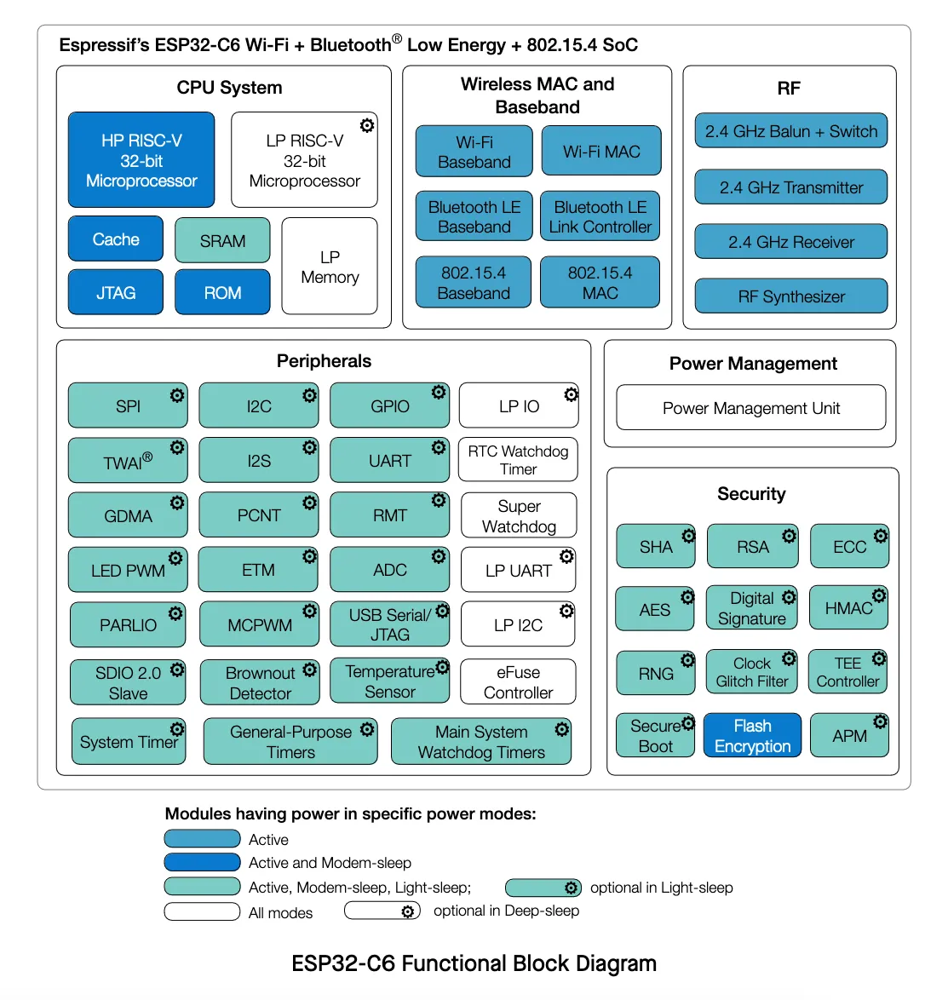
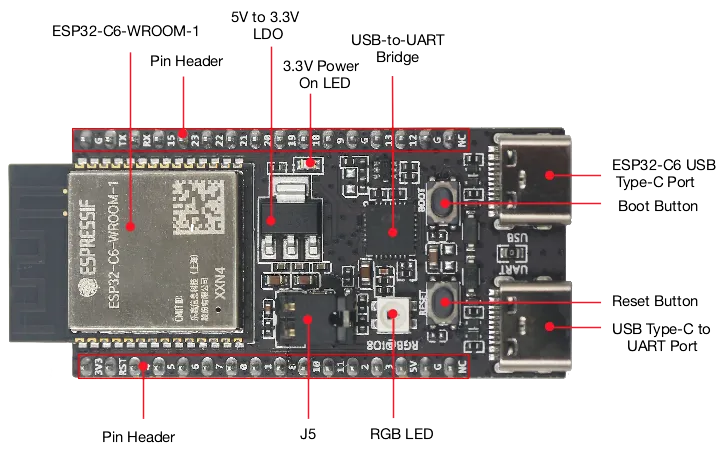
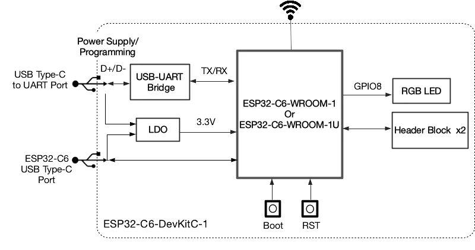
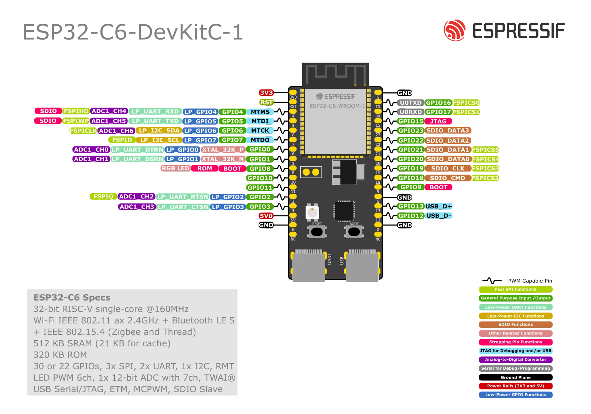

Představení ESP-IDF
ESP-IDF (Espressif IoT Development Framework) je oficiální vývojový framework pro všechny čipy rodiny ESP32 od firmy Espressif Systems. Framework poskytuje kompletní prostředí pro vývoj, flashování a monitorování IoT aplikací, které mohou pokrývat vše od sítí přes bezpečnost, až po vysoce spolehlivé aplikace. Samotné čipy ESP32 jsou populární napříč odvětvími, od domácích kutilů a bastlířů až po profesionální a průmyslové nasazení.
ESP-IDF v sobě obsahuje také FreeRTOS, který vývojářům umožňuje tvořit real-time aplikace s podporou multitaskingu. Díky široké paletě knihoven, komponent, podporovaných protokolů (Wi-Fi, Bluetooth, Thread, ZigBee, MQTT a mnoho dalšího), nástrojům a podrobné dokumentaci ESP-IDF usnadňuje vývoj IoT aplikací a umožňuje jednoduché využití velkého spektra hardware a periferií.
Zároveň ESP-IDF obsahuje zhruba 400 příkladových projektů, pokrývajících základní případy použití, což umožňuje vývojářům dále zrychlit počáteční fázi vývoje a ti tak mohou rychleji začít pracovat na svých projektech.
Architektura
Architektura frameworku ESP-IDF je rozdělená do 3 vrstev:
- ESP-IDF platforma
- Obsahuje samotné jádro ESP-IDF: FreeRTOS, ovladače, protokoly, build system…
- Middleware
- Přidává další funkcionalitu do ESP-IDF, například audio framework ESP-ADF
- AIoT aplikace
- Váš projekt

Frameworks
Na ESP-IDF je založených i několik dalších frameworků:
- Arduino for ESP32
- ESP-ADF (Audio Development Framework): Připravený pro audio aplikace
- ESP-WHO (AI Development Framework): Zaměřený na rozpoznávání a detekci obličeje
- ESP-RainMaker: Díky cloudovým službám zjednodušuje připojení a ovládání zařízení s ESP32
- ESP-Matter SDK: Oficiální vývojový framework pro Matter na čipech rodiny ESP32
Pokud se chcete podívat na všechny odvozené frameworky, navštivte náš GitHub.
Podpora různých verzí ESP-IDF
ESP-IDF se stále vyvíjí. Pro aktuální informace o podporovaných verzích navšitvte náš Github.
Představení ESP32-C6
ESP32-C6 je ultra-low-power čip s architekturou RISC-V. Obsahuje jedno “plnohodnotné” a jedno ULP (ultra-low-power) jádro a podporuje všechny běžné bezdrátové technologie: 2.4 GHz Wi-Fi 6 (802.11ax), Bluetooth® 5 (LE), Zigbee a Thread (802.15.4). K dispozici je volitelná 4MB flash paměť přímo v pouzdře čipu, 22 nebo 30 GPIO pinů a bohatá nabídka periferií:

- 30 (QFN40) nebo 22 (QFN32) pinů
- 5 strapping piny
- 6 GPIO pinů je potřebných pro in-package flash
- Analogová rozhraní:
- 12-bit SAR ADC, až 7 kanálů
- Senzor teploty
- Digitální rozhraní:
- 2x UARTs
- Low-power (LP) UART
- 2x SPI pro komunikaci s flash pamětí
- SPI pro obecné použití
- I2C
- Low-power (LP) I2C
- I2S
- Pulse count kontroler
- USB Serial/JTAG kontroler
- 2x TWAI® kontrolery, kompatibilní s ISO 11898-1 (CAN Specification 2.0)
- SDIO 2.0 slave kontroler
- LED PWM controller, až 6 kanálů
- Motor Control PWM (MCPWM)
- Remote control periferie (TX/RX)
- Paralelní IO rozhraní (PARLIO)
- Obecný DMA kontroler se 3 transmit 3 receive kanály
- Event task matrix (ETM)
- Timery:
- 52-bit systémový timer
- 2x 54-bit timer pro obecné použití
- 3x digitální watchdog
- Analogový watchdog
Pro více detailů se podívejte na datasheet ESP32-C6.
Představení kitu ESP32-C6-DevKit-C
ESP32-C6-DevKitC-1 je vývojová deska určená (nejen) začátečníkům, v jejímž srdci je modul ESP32-C6-WROOM-1(U) spolu s 8 MB SPI flash paměti. Stejně jako samotný čip ESP32-C6, deska podporuje mnoho protokolů, od Wi-Fi, přes Blzuetooth LE, až po Zigbee a Thread.
Většina GPIO pinů je přístupná z vývodů po stranách desky se standardní roztečí 2.54 mm. Periferie na ně můžou být připojené pomocí klasických vodičů, případně lze desku zacvaknout do nepájivého pole.
Vlastnosti
Níže jsou uvedené základní vlastnosti vývojého kitu:
- ESP32-C6-WROOM-1 modul
- Pinové vývody po stranách
- 5 V to 3.3 V low-dropou regulátor
- 3.3 V Power On LED
- USB-to-UART Bridge
- ESP32-C6 USB Type-C Port pro flashování a debug
- Boot Button
- Reset Button
- USB Type-C to UART Port
- RGB LED na pinu GPIO8
- J5 jumper pro měření proudu
Popis desky


Layout desky

J1 pinové pole
| No. | Name | Type | Function |
|---|---|---|---|
| 1 | 3V3 | P | 3.3 V power supply |
| 2 | RST | I | High: enables the chip; Low: disables the chip. |
| 3 | 4 | I/O/T | MTMS, GPIO4, LP_GPIO4, LP_UART_RXD, ADC1_CH4, FSPIHD |
| 4 | 5 | I/O/T | MTDI, GPIO5, LP_GPIO5, LP_UART_TXD, ADC1_CH5, FSPIWP |
| 5 | 6 | I/O/T | MTCK, GPIO6, LP_GPIO6, LP_I2C_SDA, ADC1_CH6, FSPICLK |
| 6 | 7 | I/O/T | MTDO, GPIO7, LP_GPIO7, LP_I2C_SCL, FSPID |
| 7 | 0 | I/O/T | GPIO0, XTAL_32K_P, LP_GPIO0, LP_UART_DTRN, ADC1_CH0 |
| 8 | 1 | I/O/T | GPIO1, XTAL_32K_N, LP_GPIO1, LP_UART_DSRN, ADC1_CH1 |
| 9 | 8 | I/O/T | GPIO8 |
| 10 | 10 | I/O/T | GPIO10 |
| 11 | 11 | I/O/T | GPIO11 |
| 12 | 2 | I/O/T | GPIO2, LP_GPIO2, LP_UART_RTSN, ADC1_CH2, FSPIQ |
| 13 | 3 | I/O/T | GPIO3, LP_GPIO3, LP_UART_CTSN, ADC1_CH3 |
| 14 | 5V | P | 5 V power supply |
| 15 | G | G | Ground |
| 16 | NC | – | No connection |
J3 pinové pole
| No. | Name | Type | Function |
|---|---|---|---|
| 1 | G | G | Ground |
| 2 | TX | I/O/T | U0TXD, GPIO16, FSPICS0 |
| 3 | RX | I/O/T | U0RXD, GPIO17, FSPICS1 |
| 4 | 15 | I/O/T | GPIO15 |
| 5 | 23 | I/O/T | GPIO23, SDIO_DATA3 |
| 6 | 22 | I/O/T | GPIO22, SDIO_DATA2 |
| 7 | 21 | I/O/T | GPIO21, SDIO_DATA1, FSPICS5 |
| 8 | 20 | I/O/T | GPIO20, SDIO_DATA0, FSPICS4 |
| 9 | 19 | I/O/T | GPIO19, SDIO_CLK, FSPICS3 |
| 10 | 18 | I/O/T | GPIO18, SDIO_CMD, FSPICS2 |
| 11 | 9 | I/O/T | GPIO9 |
| 12 | G | G | Ground |
| 13 | 13 | I/O/T | GPIO13, USB_D+ |
| 14 | 12 | I/O/T | GPIO12, USB_D- |
| 15 | G | G | Ground |
| 16 | NC | – | No connection |
Zdroje
Další krok
Pro teoretickém úvodu již nastal čas pustit se do programování. Nejprve si ale musíme naisntalovat potřebné nástroje.